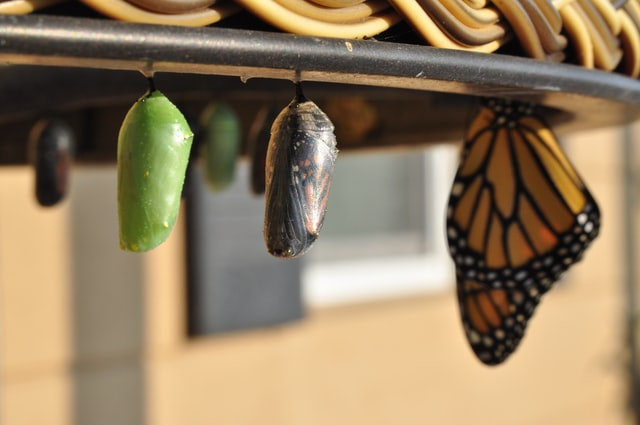

Project TETRIS: Chapter 2: Laws of System Evolution (PDF)
Project TETRIS: Chapter 5: Techniques to Resolve Contradictions / Resources / Effects (PDF)
Project TETRIS: Examples of inventive problems: Example 1-5 (RAR Archive File)